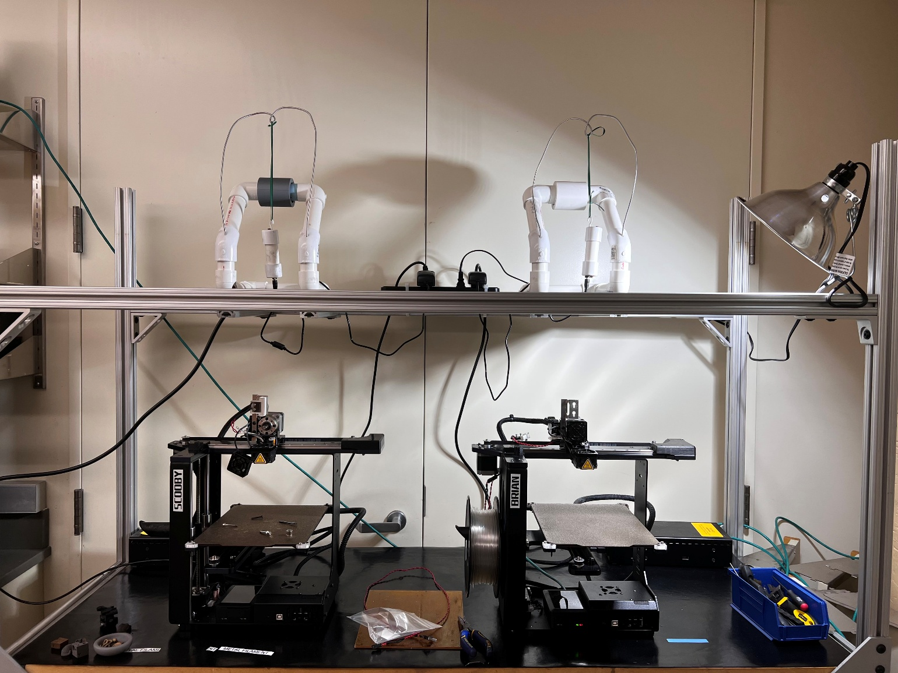

Metal 3D Printing Workflow
This project focused on developing a repeatable workflow for producing metal parts using metal-infused filament. The process follows a Bound Metal Deposition (BMD) pipeline where a plastic-bound metal filament is printed, debinding removes the binder, and sintering fuses the remaining metal powder into a dense metal part.
During testing several practical engineering challenges appeared, including brittle filament breakage, nozzle clogging caused by metal powder, and dimensional shrinkage during sintering. Solutions were implemented to improve reliability and allow predictable production of metal parts.
Key improvements included optimizing printer setup, implementing purge procedures to prevent nozzle clogs, and developing furnace programs for consistent debinding and sintering cycles. Dimensional shrinkage was also characterized so CAD models can be scaled appropriately before printing.
Printer Setup

Debinding and Sintering

Full Documentation
The complete workflow documentation includes printer setup, slicing parameters, debinding procedures, furnace programs, and shrinkage measurements.